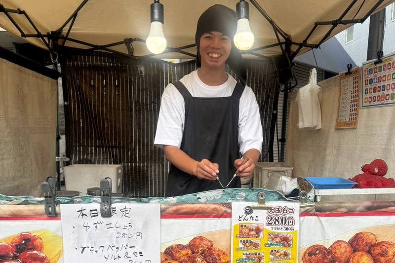
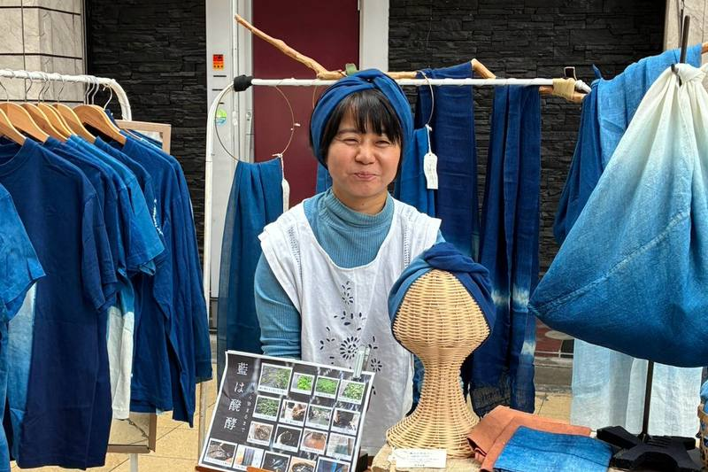
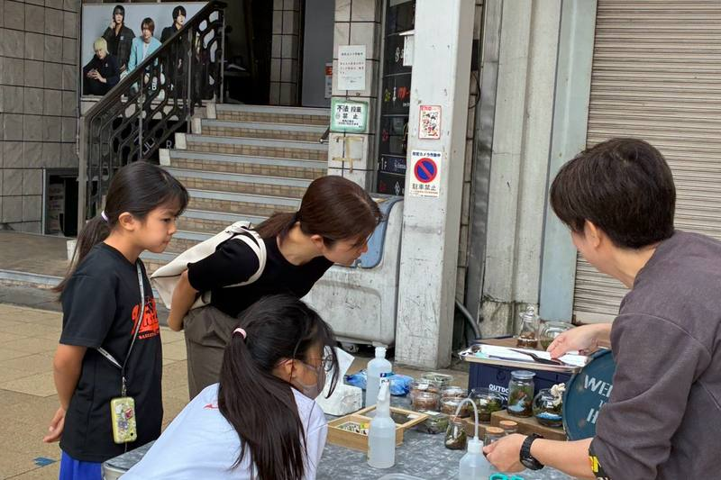
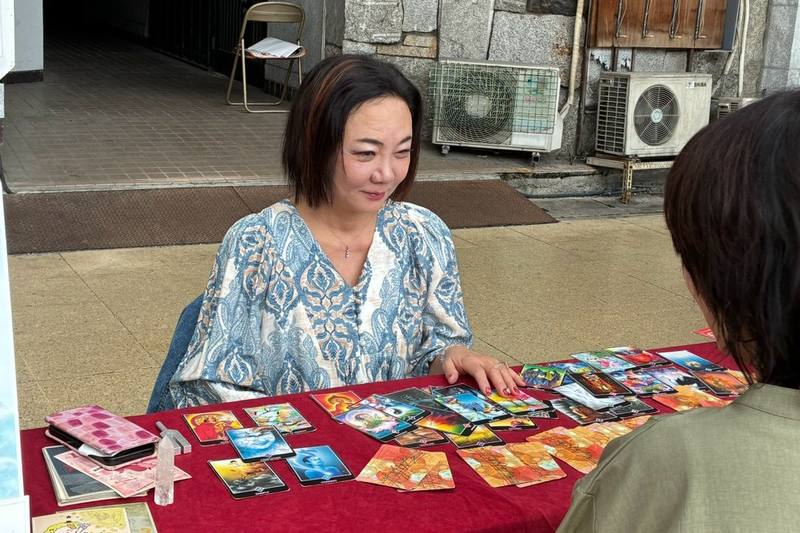
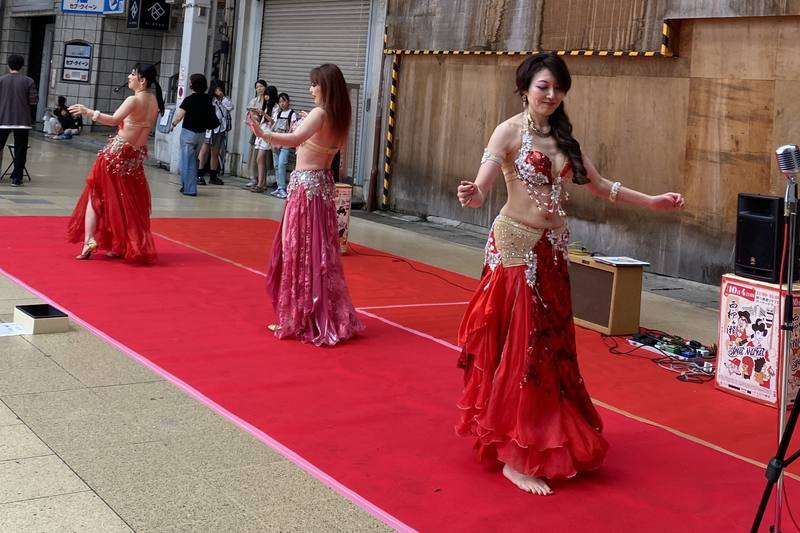

01
おいしいもの
コーヒーやスイーツ、たこ焼き、お惣菜まで。食べ歩きも、ひと休みも。

下書きです。出店者・出演者・開催概要は、第1回(2026年10月4日)の内容を仮に入れています。
第2回2027年5月23日(日)春の回・開催予定
おいしいもの、
手仕事、占い、
そして音楽。

年に2回、春と秋にひらく西柳ケ瀬ストリートマーケット。春は日中に、秋は暗くなるまで開きます。第2回は、春の回です。
西柳ケ瀬のアーケードの下に、小さなお店が並びます。食べたり、気になるものを見つけたり、占ってもらったり。どこからか聞こえてくる音楽を楽しみながら、通りを歩いてみてください。
どなたでも、ふらっとお越しください。
ひとりでも、だれかとでも。
お店の名前を押すと、それぞれのInstagramをご覧いただけます。(第1回の出店者・出演者を仮に入れています)

01
コーヒーやスイーツ、たこ焼き、お惣菜まで。食べ歩きも、ひと休みも。

02
アクセサリーや古着、藍染め、キャンドル。野菜やパン、麹の調味料も並びます。

03
ワークショップや似顔絵、リラクゼーション。手を動かして、ひと休みして。

04
タロットや手相、マヤ暦。ちょっと聞いてみたいことを、ふらっと。

05
アーケードのあちこちから、音楽と拍手が。出演者は、決まりしだい順にお知らせします。
気持ちよく過ごしていただくために、いくつかお願いがあります。
地図は第1回のものです。押すと大きく表示します。
会場は、岐阜市柳ケ瀬通5丁目のアーケードの下です。柳ケ瀬センターの西側が目印です。
歩いてJR岐阜駅・名鉄岐阜駅から、北へ歩いて15分ほどです。
バスでJR岐阜駅の⑫・⑬番のりば、または名鉄岐阜の④番のりばから「岐阜公園・長良橋」方面のバスに乗り、「柳ケ瀬」で降ります。そこからアーケードを西へ、歩いて5〜7分ほどです。
岐阜駅からの道順を見る(Googleマップ)会場に専用の駐車場はありません。近くの駐車場をご利用ください。
近くの駐車場を探す(Googleマップ)当日は周辺が混み合うことがあります。
お店や知り合いの方へのお声がけに、よろしければお使いください。(第1回のチラシ)
押すと大きく表示します。
地元を応援したいという気持ちで力を貸してくださった皆さまに、心より御礼申し上げます。(第1回の協賛)